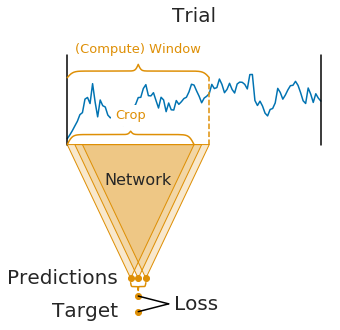
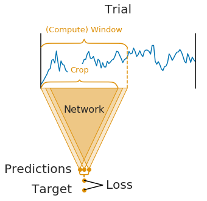

Note
Click here to download the full example code
Cropped Decoding on BCIC IV 2a Dataset¶
Building on the Trialwise decoding tutorial, we now do more data-efficient cropped decoding!
In Braindecode, there are two supported configurations created for training models: trialwise decoding and cropped decoding. We will explain this visually by comparing trialwise to cropped decoding.
 

On the left, you see trialwise decoding:
A complete trial is pushed through the network.
The network produces a prediction.
The prediction is compared to the target (label) for that trial to compute the loss.
On the right, you see cropped decoding:
Instead of a complete trial, crops are pushed through the network.
For computational efficiency, multiple neighbouring crops are pushed through the network simultaneously (these neighbouring crops are called compute windows)
Therefore, the network produces multiple predictions (one per crop in the window)
The individual crop predictions are averaged before computing the loss function
Note
The network architecture implicitly defines the crop size (it is the receptive field size, i.e., the number of timesteps the network uses to make a single prediction)
The window size is a user-defined hyperparameter, called
input_window_samplesin Braindecode. It mostly affects runtime (larger window sizes should be faster). As a rule of thumb, you can set it to two times the crop size.Crop size and window size together define how many predictions the network makes per window:
#window−#crop+1=#predictions
Note
For cropped decoding, the above training setup is mathematically identical to sampling crops in your dataset, pushing them through the network and training directly on the individual crops. At the same time, the above training setup is much faster as it avoids redundant computations by using dilated convolutions, see our paper Deep learning with convolutional neural networks for EEG decoding and visualization. # noqa: E501 However, the two setups are only mathematically identical in case (1) your network does not use any padding or only left padding and (2) your loss function leads to the same gradients when using the averaged output. The first is true for our shallow and deep ConvNet models and the second is true for the log-softmax outputs and negative log likelihood loss that is typically used for classification in PyTorch.
Loading and preprocessing the dataset¶
Loading and preprocessing stays the same as in the Trialwise decoding tutorial.
from braindecode.datasets.moabb import MOABBDataset
subject_id = 3
dataset = MOABBDataset(dataset_name="BNCI2014001", subject_ids=[subject_id])
from braindecode.preprocessing.preprocess import (
exponential_moving_standardize, preprocess, Preprocessor, scale)
low_cut_hz = 4. # low cut frequency for filtering
high_cut_hz = 38. # high cut frequency for filtering
# Parameters for exponential moving standardization
factor_new = 1e-3
init_block_size = 1000
preprocessors = [
Preprocessor('pick_types', eeg=True, meg=False, stim=False), # Keep EEG sensors
Preprocessor(scale, factor=1e6, apply_on_array=True), # Convert from V to uV
Preprocessor('filter', l_freq=low_cut_hz, h_freq=high_cut_hz), # Bandpass filter
Preprocessor(exponential_moving_standardize, # Exponential moving standardization
factor_new=factor_new, init_block_size=init_block_size)
]
# Transform the data
preprocess(dataset, preprocessors)
Out:
/usr/share/miniconda/envs/braindecode/lib/python3.7/site-packages/sklearn/utils/deprecation.py:87: FutureWarning: Function scale is deprecated; will be removed in 0.7.0. Use numpy.multiply instead.
warnings.warn(msg, category=FutureWarning)
<braindecode.datasets.moabb.MOABBDataset object at 0x7f663a03f5d0>
Create model and compute windowing parameters¶
In contrast to trialwise decoding, we first have to create the model before we can cut the dataset into windows. This is because we need to know the receptive field of the network to know how large the window stride should be.
We first choose the compute/input window size that will be fed to the network during training This has to be larger than the networks receptive field size and can otherwise be chosen for computational efficiency (see explanations in the beginning of this tutorial). Here we choose 1000 samples, which are 4 seconds for the 250 Hz sampling rate.
input_window_samples = 1000
Now we create the model. To enable it to be used in cropped decoding
efficiently, we manually set the length of the final convolution layer
to some length that makes the receptive field of the ConvNet smaller
than input_window_samples (see final_conv_length=30 in the model
definition).
import torch
from braindecode.util import set_random_seeds
from braindecode.models import ShallowFBCSPNet
cuda = torch.cuda.is_available() # check if GPU is available, if True chooses to use it
device = 'cuda' if cuda else 'cpu'
if cuda:
torch.backends.cudnn.benchmark = True
# Set random seed to be able to roughly reproduce results
# Note that with cudnn benchmark set to True, GPU indeterminism
# may still make results substantially different between runs
seed = 20200220
set_random_seeds(seed=seed, cuda=cuda)
n_classes = 4
# Extract number of chans from dataset
n_chans = dataset[0][0].shape[0]
model = ShallowFBCSPNet(
n_chans,
n_classes,
input_window_samples=input_window_samples,
final_conv_length=30,
)
# Send model to GPU
if cuda:
model.cuda()
And now we transform model with strides to a model that outputs dense prediction, so we can use it to obtain predictions for all crops.
from braindecode.models.util import to_dense_prediction_model, get_output_shape
to_dense_prediction_model(model)
To know the models’ receptive field, we calculate the shape of model output for a dummy input.
Cut the data into windows¶
In contrast to trialwise decoding, we have to supply an explicit window size and
window stride to the create_windows_from_events function.
from braindecode.preprocessing.windowers import create_windows_from_events
trial_start_offset_seconds = -0.5
# Extract sampling frequency, check that they are same in all datasets
sfreq = dataset.datasets[0].raw.info['sfreq']
assert all([ds.raw.info['sfreq'] == sfreq for ds in dataset.datasets])
# Calculate the trial start offset in samples.
trial_start_offset_samples = int(trial_start_offset_seconds * sfreq)
# Create windows using braindecode function for this. It needs parameters to define how
# trials should be used.
windows_dataset = create_windows_from_events(
dataset,
trial_start_offset_samples=trial_start_offset_samples,
trial_stop_offset_samples=0,
window_size_samples=input_window_samples,
window_stride_samples=n_preds_per_input,
drop_last_window=False,
preload=True
)
Split the dataset¶
This code is the same as in trialwise decoding.
Training¶
In difference to trialwise decoding, we now should supply
cropped=True to the EEGClassifier, and CroppedLoss as the
criterion, as well as criterion__loss_function as the loss function
applied to the meaned predictions.
Note
In this tutorial, we use some default parameters that we have found to work well for motor decoding, however we strongly encourage you to perform your own hyperparameter optimization using cross validation on your training data.
from skorch.callbacks import LRScheduler
from skorch.helper import predefined_split
from braindecode import EEGClassifier
from braindecode.training.losses import CroppedLoss
# These values we found good for shallow network:
lr = 0.0625 * 0.01
weight_decay = 0
# For deep4 they should be:
# lr = 1 * 0.01
# weight_decay = 0.5 * 0.001
batch_size = 64
n_epochs = 4
clf = EEGClassifier(
model,
cropped=True,
criterion=CroppedLoss,
criterion__loss_function=torch.nn.functional.nll_loss,
optimizer=torch.optim.AdamW,
train_split=predefined_split(valid_set),
optimizer__lr=lr,
optimizer__weight_decay=weight_decay,
iterator_train__shuffle=True,
batch_size=batch_size,
callbacks=[
"accuracy", ("lr_scheduler", LRScheduler('CosineAnnealingLR', T_max=n_epochs - 1)),
],
device=device,
)
# Model training for a specified number of epochs. `y` is None as it is already supplied
# in the dataset.
clf.fit(train_set, y=None, epochs=n_epochs)
Out:
epoch train_accuracy train_loss valid_accuracy valid_loss lr dur
------- ---------------- ------------ ---------------- ------------ ------ -------
1 0.2500 1.4486 0.2500 5.4387 0.0006 18.4162
2 0.2569 1.2315 0.2500 3.6825 0.0005 18.2220
3 0.3958 1.1476 0.3611 2.2702 0.0002 18.0703
4 0.4340 1.1225 0.4410 1.4375 0.0000 18.1100
<class 'braindecode.classifier.EEGClassifier'>[initialized](
module_=ShallowFBCSPNet(
(ensuredims): Ensure4d()
(dimshuffle): Expression(expression=transpose_time_to_spat)
(conv_time): Conv2d(1, 40, kernel_size=(25, 1), stride=(1, 1))
(conv_spat): Conv2d(40, 40, kernel_size=(1, 22), stride=(1, 1), bias=False)
(bnorm): BatchNorm2d(40, eps=1e-05, momentum=0.1, affine=True, track_running_stats=True)
(conv_nonlin_exp): Expression(expression=square)
(pool): AvgPool2d(kernel_size=(75, 1), stride=(1, 1), padding=0)
(pool_nonlin_exp): Expression(expression=safe_log)
(drop): Dropout(p=0.5, inplace=False)
(conv_classifier): Conv2d(40, 4, kernel_size=(30, 1), stride=(1, 1), dilation=(15, 1))
(softmax): LogSoftmax(dim=1)
(squeeze): Expression(expression=squeeze_final_output)
),
)
Plot Results¶
This is again the same code as in trialwise decoding.
Note
Note that we drop further in the classification error and loss as in the trialwise decoding tutorial.
import matplotlib.pyplot as plt
from matplotlib.lines import Line2D
import pandas as pd
# Extract loss and accuracy values for plotting from history object
results_columns = ['train_loss', 'valid_loss', 'train_accuracy', 'valid_accuracy']
df = pd.DataFrame(clf.history[:, results_columns], columns=results_columns,
index=clf.history[:, 'epoch'])
# get percent of misclass for better visual comparison to loss
df = df.assign(train_misclass=100 - 100 * df.train_accuracy,
valid_misclass=100 - 100 * df.valid_accuracy)
plt.style.use('seaborn')
fig, ax1 = plt.subplots(figsize=(8, 3))
df.loc[:, ['train_loss', 'valid_loss']].plot(
ax=ax1, style=['-', ':'], marker='o', color='tab:blue', legend=False, fontsize=14)
ax1.tick_params(axis='y', labelcolor='tab:blue', labelsize=14)
ax1.set_ylabel("Loss", color='tab:blue', fontsize=14)
ax2 = ax1.twinx() # instantiate a second axes that shares the same x-axis
df.loc[:, ['train_misclass', 'valid_misclass']].plot(
ax=ax2, style=['-', ':'], marker='o', color='tab:red', legend=False)
ax2.tick_params(axis='y', labelcolor='tab:red', labelsize=14)
ax2.set_ylabel("Misclassification Rate [%]", color='tab:red', fontsize=14)
ax2.set_ylim(ax2.get_ylim()[0], 85) # make some room for legend
ax1.set_xlabel("Epoch", fontsize=14)
# where some data has already been plotted to ax
handles = []
handles.append(Line2D([0], [0], color='black', linewidth=1, linestyle='-', label='Train'))
handles.append(Line2D([0], [0], color='black', linewidth=1, linestyle=':', label='Valid'))
plt.legend(handles, [h.get_label() for h in handles], fontsize=14)
plt.tight_layout()
Plot Confusion Matrix¶
Generate a confusion matrix as in https://onlinelibrary.wiley.com/doi/full/10.1002/hbm.23730
from sklearn.metrics import confusion_matrix
from braindecode.visualization import plot_confusion_matrix
# generate confusion matrices
# get the targets
y_true = valid_set.get_metadata().target
y_pred = clf.predict(valid_set)
# generating confusion matrix
confusion_mat = confusion_matrix(y_true, y_pred)
# add class labels
# label_dict is class_name : str -> i_class : int
label_dict = valid_set.datasets[0].windows.event_id.items()
# sort the labels by values (values are integer class labels)
labels = list(dict(sorted(list(label_dict), key=lambda kv: kv[1])).keys())
# plot the basic conf. matrix
plot_confusion_matrix(confusion_mat, class_names=labels)
Out:
<Figure size 800x550 with 1 Axes>
Total running time of the script: ( 1 minutes 45.864 seconds)
Estimated memory usage: 1624 MB